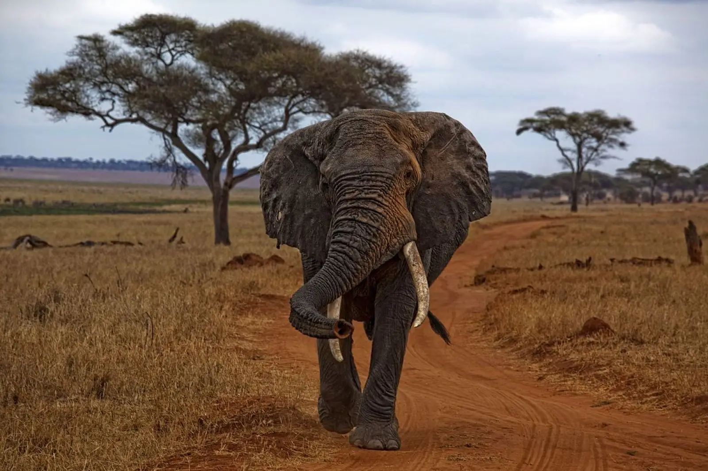

The Bush Elephant (Loxodonta africana)
General Information
The African Bush Elephant is an elephant species that resides in Southern Africa. They are the largest elephant species, and largest land animal. African bush elephants posses ears that are shaped like the continent of Africa and their skin is far more rinkled than other elephant species as it helps temperature regulation in the African heat. The bulls can reach a height of above three meters and a weight of up to 8000 kg, substantially larger than asian elephants with 2.7 meter max height and a weight up to 5500 kg. The African forest elephant is the smallest of the three and is dwarfed by the others at a max height of 2.5 meters and average weight of around 2700 kg.
Social Dynamics
The African Bush elephant are known for their family units which are made up of around ten females and their offspring. The family groups of elephants are known to practice "allmothering". This is where the mature females of the family group take care of any calf in the group, whether it is their calf or not. This further strengthens the groups dynamic and gives each member of the group more reason to contribute to the family unit. Males, once they reach maturity, leave their respective family units and either form a group with fellow bachelors or live solitarily. Males from then on only interact with female led family units for the purposes of mating. The social dynamics of the Bush Elephant do not stop at that however as multiple family groups are known to associate closely and create a clan, which is led by a matriarch. The size of these clans can reach several hundred elephants.
Feeding Practices
Bush elephant groups, whether they be family units or bachelor parties, forage during the day for food and rest in tight nit groups at night. They are primarily herbivores and primarily feed upon leaves, grass, bark, fruit, roots and any plant matter they can get their trunks on. Bush elephants are also known for preferring watering holes that are mineral rich and will go out of their way to find sources of essential minerals, especially salt. They will look for termite mounds, mineral licks, and even ingest wood ash in order to get the sodium they require.
Communication
Bush elephants use a mixture of gestures and vocal noises to communicate with their fellow elephants or any outside threats. When two elephants greet eachother, the lower ranking elephant will place its trunk in the other elephants mouth. During courtship, elephants use their trunks to caress each other in affection. When wrestling, the trunk is used to play. Bush elephants also have several vocal noises they use to communicate, with a lot of them being outside the hearing range of humans. The calls that are outside the hearing range of humans are usually intended to carry across vast distances for the purposes of not getting lost or specifically searching for other groups of elephants.